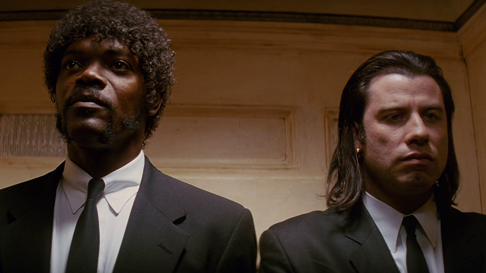

Pulp Fiction is a 1994 film directed by Quentin
Tarantino that changed the face of independent cinema forever. The film is a unique, non-linear narrative
that follows several different stories, all of which are intertwined in unexpected ways. The film was
widely praised for its innovative style, memorable characters, and quotable dialogue, and it quickly
became a cultural phenomenon. The film’s impact on the film industry was massive. Pulp Fiction was one
of the first independent films to receive widespread mainstream recognition and commercial success.
The film’s success showed that independent filmmakers could create high-quality films that could compete
with big-budget Hollywood productions. It also showed that a film could be successful even if it was not
a straightforward narrative. Pulp Fiction’s non-linear structure inspired a new generation of filmmakers
to experiment with unconventional storytelling techniques, and it remains an influential film to this day.
In addition to its impact on the film industry, Pulp Fiction also had a significant impact on popular
culture. The film’s unique style, memorable characters, and quotable dialogue made it a cultural
touchstone, and it continues to be widely referenced in popular media. The film’s iconic characters,
such as Vincent Vega and Jules Winnfield, have become cultural icons, and the film’s dialogue has become
part of the popular lexicon. Pulp Fiction also received widespread critical acclaim and numerous awards.
The film won the Palme d’Or at the 1994 Cannes Film Festival, and it was nominated for seven Academy
Awards, including Best Picture. It won the award for Best Original Screenplay, solidifying Quentin
Tarantino’s place as one of the most talented and innovative filmmakers of his generation.
In conclusion, Pulp Fiction is a landmark film that has had a profound impact on both the film industry
and popular culture. Its innovative style, memorable characters, and quotable dialogue have made it a
classic, and its influence continues to be felt to this day. Whether you are a fan of independent cinema
or just enjoy great films, Pulp Fiction is a classic that should not be missed.